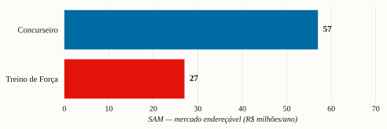

Dois mercados grandes e complementares — um validado, um em whitespace. O tamanho não é o gargalo; a aquisição é.
| SAM — Concurseiro | ~R$ 55 M/ano |
|---|---|
| SAM — Treino de Força | ~R$ 25 M/ano |
| SOM ano 1 (combinado) | 350–1.100 un |
| Gargalo | aquisição, não mercado |
Dois mercados grandes e estruturalmente sólidos, com perfis de risco opostos e complementares:
O tamanho não é o gargalo. O SAM somado é da ordem de R$ 50–120 M/ano; o SOM do ano 1 (200–1.100 un) é limitado por capacidade de aquisição — construir audiência do zero, num ticket (R$ 110–119) em que tráfego pago frio é inviável (CAC R$ 120–333). A vitória depende de conteúdo orgânico (a força dos sócios), não de mídia paga.
Pesquisa multi-fonte (Exa/Tavily + web), triangulando ≥2 fontes para números centrais. TAM/SAM/
SOM por método explícito (top-down de fontes oficiais + bottom-up por funil). Fontes primárias
priorizadas: IBGE, MGI/Gov.br, Censo dos Concursos 2025 (QConcursos/Folha Dirigida, n=13.128),
HFA/Panorama Fitness 2025, páginas oficiais de marketplaces, Amazon/ML. Detalhe e tabela de
fontes em research/evidence/mercado-demanda.md, concorrencia-preco.md, canal-aquisicao.md.
[estimativa triangulada] (9.581
concursos abertos em 2025, +57% vs 2024; CNU 2024 com 2,14 M inscritos) [confirmado — MGI].[confirmado — Censo
2025]; 67,8% estudam empregados. O público renova-se continuamente.[confirmado].Não haverá CNU em 2026, mas por vedação legal de ano eleitoral, não por queda de demanda:
Lei 9.504/97 (art. 73, V) proíbe nomeações de 4/jul/2026 a ~6/jan/2027; LRF (art. 21) veda
aumento de despesa de pessoal nos 180 dias finais de mandato [confirmado]. Editais, provas e
homologações seguem o ano todo. O ciclo pós-eleição retoma com força — em 2023 foram
9.116 vagas federais (+47% vs os 4 anos anteriores somados); a PLOA 2026 prevê ~89 mil
provimentos e o CNU 3ª edição é esperado para 2027 [a confirmar — fontes de cursinhos; sem
decreto]. Enquadramento apartidário. Implicação: 2026 = construir/validar; 2027 =
vento de cauda para escalar.
[estimativa triangulada]| Métrica | Faixa | Método |
|---|---|---|
| TAM (material físico/papelaria) | R$ 300–800 M/ano | recorte de papelaria sobre a base ativa |
| SAM (compraria planner ~R$ 110) | R$ 35–80 M/ano (~400–700 k pessoas) | base × intensidade × renda × propensão a físico premium |
| SOM ano 1 | R$ 24–71 k (200–600 un) | limitado por aquisição (D2C bootstrap, sem audiência) |
| SOM ano 2 | R$ 95–238 k (800–2.000 un) | com audiência construída + vento de 2027 |
O SAM usa proxy de renda familiar e pode estar ~14% superestimado — imaterial para o SOM (limitado por aquisição, não por tamanho de mercado).
[confirmado — HFA/Panorama 2025]; 6–7 M com foco em
musculação; 1,3–3 M seguem treino periodizado/sério [estimativa].[confirmado]; dado BR específico é pago [a confirmar].Não foi identificado, em buscas (jun/2026), um diário de periodização nacional com marca.
A concorrência é importada (R$ 130–200 no Brasil) ou app (R$ 130–165/ano). Vantagens do
nicho: menos concorrência, menos âncora de preço, recompra (o logbook acaba), demanda
contínua (sem sazonalidade). Desvantagem: exige educar o mercado sobre o conceito
diário de periodização (vs. caderno de treino). [estimativa — buscas não alcançam D2C puro]
[estimativa triangulada]| Métrica | Faixa |
|---|---|
| SAM (logbook premium) | R$ 15–40 M/ano (~150–370 k pessoas) |
| SOM ano 1 | R$ 16–54 k (150–500 un) |
| SOM ano 2 | R$ 65–196 k (600–1.800 un) |
Correção estrutural (jun/2026). O planner de estudo cobre ~3 meses de ciclo; o concurseiro recompra 3–4×/ano ao longo dos ~2 anos de preparação. O diário de treino esgota em ~4–5 meses. Logo, o negócio é recorrente/consumível, não venda única — o que multiplica o LTV e o tamanho real do mercado. (Modelo: aba
LTV & Recorrência.)
LTV por cliente [estimativa — premissas a validar com survey]:
| Concurseiro | Treino de Força | |
|---|---|---|
| Recompra/ano · permanência | 3 × 2 anos | 2,5 × 3 anos |
| Unidades na vida | 6 | 7,5 |
| LTV (margem) | R$ 374 | R$ 397 |
| LTV (receita) | R$ 714 | R$ 818 |
| LTV/CAC (CAC R$ 50) | 7,5× | 7,9× |
Tamanho do mercado recorrente (anual) — em fluxo, não em pessoas:
| Concurseiro | Treino | Total | |
|---|---|---|---|
| Unidades/ano | 1,65 M | 0,65 M | ~2,3 M un/ano |
| Receita/ano | R$ 196 M | R$ 71 M | ~R$ 267 M/ano |
| Novos compradores premium/ano | ~275 mil | ~90 mil | ~365 mil/ano |
(Teto: assume todo comprador premium recomprando no ritmo pleno; um blend conservador (~2/ano) reduz ~⅓. As duas premissas que mais movem isto — recompra/ano e % elegível — devem ser validadas por survey próprio.)
Três implicações decisivas: 1. A recompra é o motor de receita. A partir do ano 2, a base retida vende sem novo CAC: cada 1.000 clientes ativos ≈ 3.000 un/ano de recompra (Concurseiro). Reter > adquirir. 2. A economia de aquisição muda. Com LTV de margem ~R$ 374–397, mesmo CAC pago de R$ 120–150 cabe (LTV/CAC 2,5–3×) — revisando a leitura anterior (tráfego frio inviável, que valia só para a 1ª venda isolada). O orgânico segue mais barato e é o forte do time, mas o pago deixa de ser proibido na escala. 3. Saturação não é risco; abastecimento é. A < 0,1% de share por anos, não há saturação. O risco oposto é desabastecer (perder recompra e reputação) → produção por reposição (make-to-demand) com estoque de segurança; sendo perpétuo, o encalhe quase não vence.

P1 — Concurseiro de alto desafio. 25–40 anos, mira Senado/Câmara/tribunais/fiscais/polícias, estuda 15–30 h/semana há 1–3 anos, já gasta com cursos (Gran/Estratégia/QConcursos), valoriza método e estética, ativo em Instagram/Telegram/fóruns. Dor: organizar ciclos de estudo e revisão sem montar planilha. Gatilho de compra: método embutido + constância + produto bonito.
P2 — Praticante sério de força. 25–45 anos, treina 3–6×/semana, segue periodização, gosta do registro analógico (sem celular na academia), acompanha criadores de treino/físico. Dor: progredir carga com método, rápido e durável. Gatilho: periodização + RPE/RIR + PRs + tonelagem num produto físico — que os apps e cadernos genéricos não entregam.
(Ambas as personas são vividas pelos próprios sócios — fonte de credibilidade e de conteúdo.)
Concurseiro
| Concorrente | Preço (jun/2026) | Formato | Sinal | Lacuna que exploramos |
|---|---|---|---|---|
| Planner do Concurseiro (Juspodivm) | R$ 85–120 | físico, datado | 177 reviews, 99% positivo | nosso é perpétuo (não recompra anual) |
| Perpétuos sem marca (ex.: Tche Decor) | R$ 71–77 | físico wire-o | sem escala/marca | método + marca |
| PDFs/digitais | R$ 35–60 | digital | barato | tangibilidade + método estruturado |
| Genéricos (Tilibra/Foroni) | R$ 28–57 | físico simples | volume alto | sem método de concurso |
Treino de força
| Concorrente | Preço no BR | Formato | Lacuna que exploramos |
|---|---|---|---|
| Logbooks importados (Gymreapers, SaltWrap) | R$ 130–200 | físico | nacional, sem barreira/idioma, mais barato |
| Nacional genérico (ex.: Amor Impresso) | R$ 77–85 | físico | sem periodização/RPE/RIR |
| Apps (Strong, Hevy) | R$ 130–165/ano | digital | tátil, compra única, sem fricção recorrente |
Posição-alvo (mapa de preço): físico, nacional, com método especializado, perpétuo, na faixa R$ 109–119 — o vão entre genéricos (R$ 28–64), premium de marca (R$ 77–120) e topo importado/app (R$ 130–200).
| Força | Concurseiro | Treino | Implicação |
|---|---|---|---|
| Rivalidade | média-alta (Juspodivm + genéricos + digitais) | baixa (whitespace) | liderar conteúdo onde a rivalidade é menor; diferenciar por método/perpétuo |
| Novos entrantes | alta (barreira de produção baixa) | alta | a barreira real é marca + conteúdo + audiência — construir esse fosso cedo |
| Substitutos | alta (apps, PDFs, Notion, caderno) | alta (apps grátis) | competir por valor do método físico, não por preço |
| Poder do comprador | médio | médio | ticket baixo + diferenciação reduzem; reviews/prova social ajudam |
| Poder do fornecedor (gráfica) | baixo (commoditizado) | baixo | múltiplas gráficas; cotar 3; sem dependência |
Leitura: o setor tem baixa barreira de entrada — qualquer um imprime um planner. O fosso defensável é marca + método proprietário + audiência/comunidade, não o produto físico. Por isso a estratégia certa é investir em conteúdo e marca desde o dia 1.
[confirmado — canal-aquisicao.md].[estimativa]. Pré-venda sem
audiência ≈ zero → construir lista de espera (60–90 dias) antes de imprimir.Oportunidade: dois mercados grandes e complementares; um validado (Concurseiro), um em whitespace (Treino). Posição de preço defensável no vão do mapa competitivo. A mesma plataforma física serve aos dois SKUs (custo incremental baixo de lançar ambos).
Riscos de mercado: (1) aquisição do zero é o gargalo central; (2) baixa barreira de entrada → o fosso precisa ser marca/conteúdo/audiência; (3) substitutos digitais baratos; (4) educação de mercado no nicho de força; (5) sensibilidade do Concurseiro ao ciclo de concursos (favorável a partir de 2027).
Implicações estratégicas: - Lançar os dois em paralelo, com conteúdo equilibrado (constrói o fosso onde a barreira é a audiência). - Orgânico primeiro (força do time), marketplace e mídia paga como apoio. - Construir marca e comunidade desde o dia 1 — é o ativo defensável. - Cronograma a favor: validar em 2026, escalar com o vento de 2027.
(Lacunas a fechar: nº de concurseiros únicos sem dupla contagem; % de praticantes com
periodização formal; gasto específico em material físico; base BR dos apps de treino. Endereçar
com survey próprio nas comunidades — ver mercado-demanda.md, lacunas L1–L3, L9.)
Estudo de apoio à decisão. Estimativas de mercado a refinar com dados primários (survey).
Fontes datadas em research/evidence/. Não constitui recomendação de investimento.
Marcações de confiança usadas no texto — [confirmado]: fonte primária datada e verificável · [estimativa triangulada]: ≥2 fontes convergentes, sem confirmação formal · [a confirmar]: faixa de mercado, não apresentada como fechada.
research/evidence/ (4 notas datadas): IBGE, MGI, Censo dos Concursos 2025, HFA/Panorama Fitness 2025, Amazon/ML/Shopee, Meta Ads. Estimativas a refinar com survey próprio.